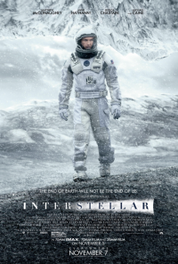
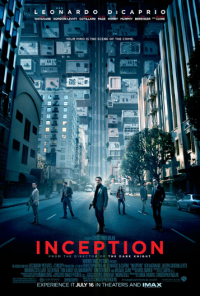

It's my favorite sci-fi. This film explores the themes of outer space, wormholes and space travel, which is really interesting.
Super beautiful film. This is one of the most touching movies.

Really cool sci-fi movie. It has excellent pictures and wonderful music.
